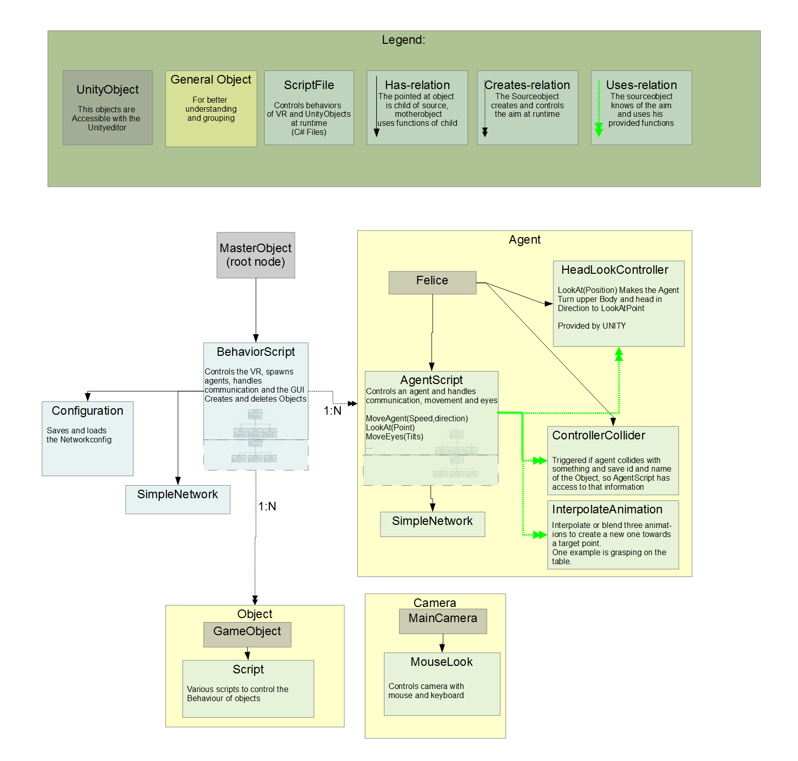

This document describes all classes and structures of the virtual reality application, the main-class is BehaviourScript .
- Authors
-
- Version
- 3.0
- Date
- Created on: November 2011, Modified on: Dec 2015
General idea
The BehaviourScript controls the whole VR. It assigns network interfaces to the agents, and has an own network interface to receive commands concerning the running experiment/trail. The AgentScript controls the agent figure. It sends images with its network interface and receives commands from the agent program, that possibly is located on another computer.
How to start
- Start Unity and select the Unity project folder to open this project.
- With double click on a C#-script, it will be opened in your favourite editor. Alternatively, you can open the Visual Studio project file "unityVR_4_2_0.sln" which will be created automatically if you open e.g. such a C#-script in Unity.
- If there are some troubles receiving the messages later, you may build (not debug or run) the SimpleNetwork project.
Development environment:
- Windows 7-8.1
- Visual Studio 2010 - 2015
- .NET >= 3.5
- Unity 4.2.0
- Linux distribution (Ubuntu, Mint, ...)
Running the Code:
Control program (C#)
- Make sure Networktest is the Project that gets executed.
- Change the IP address in the Form1.cs code.
- Press F5.
- Restart the project in the Unity-Editor.
- Press connect in the Networktesting-app. – Control the agent and watch the received camera input.
ANNarchy program (C++)
- Install ANNarchy 2.3 and follow the instructions in section 3.9 of the user documentation (see also: ./agentBrain/networkInterfaceCPP/trunk/ANNarchy-2.3/INSTALL).
Configuration of the VR before the first start:
The VR reads port and IP at which it is listening on the network from the file APPConfig.config in the Unity project folder. Copy it from the install-folder, and set your own values. There is one port for VR related messages (standard 1337) and one for agent related messages (standard 1338). The value in the file is for the VR related port, the agent port has always the next number.
See also the documentation for the network interface here.
Predefined scenarios
A scenario describes a certain (neuronal) simulation and its experimental setup, called scene. Each scenario serves as a test for the VR and should be repeated before the release of the software. At VR-side, the scenario contains normally an derived Behaviour- and Agentscript. At agent-side, the source code is in the file networkInterfaceCPP/Tests/src/main.cpp. At the moment, the following scenarios are defined:
- Children's room: Basic scenario showing a room for a small child (age 2-4). This is a nice demonstration of the VR abilities and also deeply tests the children's room scenario and the child agent. For the testsetup, see testCasesChildroom.txt. VR-Class: ChildrensRoomAgentScript, Agent-Class: main.cpp, mode 3,6.
- Five objects at the table: Demonstrates an object recognition scenario. The child has the task to point to the correct object. In each trial, five objects are spawned at 5 random positions on the table. VR-Class: FiveObjectsAtTableAgent, Agent-Class: demoSchueler20120102/src/demoR2.m .
- Brain-Visio-Agent: Showing neuronal firing rates in the VR. The VR has the ability to show online neuronal firing rates of an attached agent. This is demonstrated by this scenario for the neuronal field example. VR-Class: BrainVisioAgent, Agent-Class: ../../Demos/src/main.cpp, mode 4.
- Memory: Scene for playing the memory game against a simple AI. The memory objects are 3D-objects covered with boxes. VR-Class: MemoryAgentScript, Agent-Class: main.cpp, mode 4.
- SpatialCognition: Scene for different tests regarding spatial cognition: object recognition, body displacement, multiple attention pointers, vision and memory. The environment (children's room) is saved in a grid-map and the agent can use A*-pathwalking. VR-Class: SpartialCognitionAgentScript, Agent-Class: main.cpp, mode 5.
- Labyrinth: A reinforcement learning agent must find its way trough a labyrinth. This was mainly intended to demonstrate the available sensor and actions (see testCasesEng.txt). The agent is already very old (January 2011), however it will run with the current VR environment. VR-Class: LabyrinthAgentScript, Agent-Class: main.cpp, mode 1.
- Labyrinth (LabyrinthAgentScript) with Sync: A setup to demonstrate synchronised time in the agent and in the scene. In this scenario, a reinforcement learning agent must find its way trough a labyrinth. VR-Class: LabyrinthAgentScript, Agent-Class: main.cpp, mode 2.
Synchron mode
The virtual reality and the agent can run in asynchronous, intended to execute a real time demonstration, and synchronous mode, intended to simulate a psychological experiment. In the asynchronous mode, the VR is executed a swiftly as possible (called realtime). In synchronous mode, the VR and all agent uses the same time scale which is also independent from the real passed time, therefore precise experimental timings can be simulated. To achieve this, a simulation time is setup in the VR and it synchronise all agent with it. For more details about the usage and implementation, see this PDF file.
Class diagramm
Class diagramm.
The several scenarios are implemented as derived classes from BehaviourScript and AgentScript, for details and how to create a new scenario, see here.

 1.8.10
1.8.10